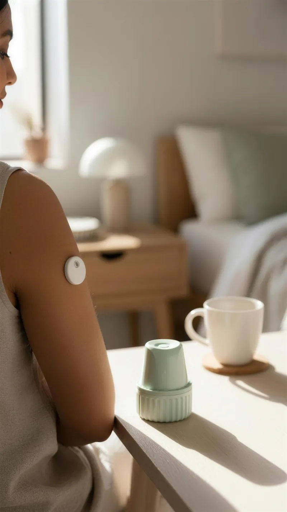
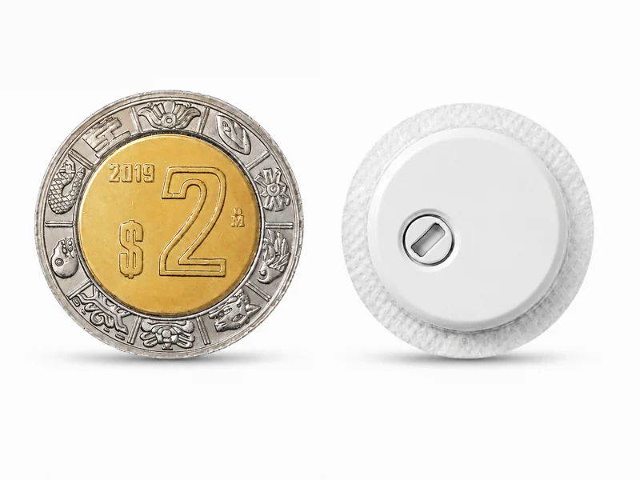
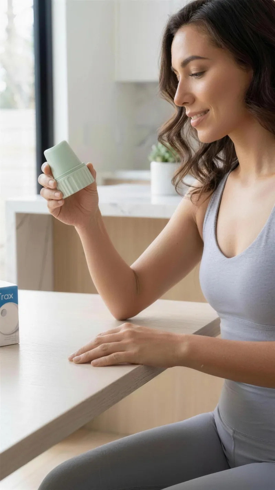

Sensor CGM · 15 días
QiTrax · QiTrax
Sensor de monitoreo continuo de glucosa: te lo colocas una vez en la parte de atrás del brazo y mide tu glucosa minuto a minuto, 1,440 lecturas al día, sin piquetes.
Elige tu compra
Elige tu pack
Cada sensor dura 15 días e incluye su aplicador
Conoce QiTrax
- 15 días por sensor, 1,440 lecturas al día
- Sin piquetes ni calibraciones manuales
- Datos automáticos a la app QiHealth por Bluetooth, con QiCoach incluida
Qué incluye
- Sensor(es) QiTrax, cada uno con su aplicador
- App QiHealth + QiCoach IA
Cómo se usa
Te lo colocas en la parte de atrás del brazo con el aplicador, en un solo movimiento, y empieza a mandar las lecturas a tu celular por Bluetooth.
Importante: el sensor se vincula a un solo celular durante sus 15 días.
Ficha técnica
Modelo GX-01S · 15 días continuos · 1 lectura por minuto · 8.66% MARD clínico · No requiere calibración · 22 mm × 4 mm, ≈2.2 g · IP68 (2 m / 1 h) · Bluetooth Low Energy · iOS 14+ y Android 12+.
Envío y garantía
Envío gratis en zonas seleccionadas, llega en 3–7 días hábiles. ¿Tu sensor no funcionó? Atención en menos de 24 horas por WhatsApp, lunes a viernes de 9 a 17 h.
Sensor CGM · Reg. SSA 2370E2025 · Permiso de publicidad 263300201B2529 · Consulta a tu médico. Uso para mayores de 18 años.
Monitoreo continuo de glucosa
Cómo funciona
QiTrax mide tu glucosa cada minuto durante 15 días y la envía sola a la app QiHealth. Ahí ves cómo responde a lo que comes, a tu ejercicio y a tu sueño, y QiCoach organiza tus datos y patrones para facilitar su visualización.

15 díasDel tamaño de una moneda: 22 mm × 4 mm y ≈2.2 g, con adhesivo hipoalergénico
 1,440/día
1,440/díaUna lectura por minuto: 1,440 al día
 QiCoach
QiCoachQiCoach organiza tus datos y patrones de glucosa para facilitar su visualización
Cómo empezar
Paso 1: Aplica el sensor
El aplicador incluido lo coloca en la parte de atrás del brazo superior en un solo movimiento.
Paso 2: Conecta la app
Vincúlalo a la app QiHealth por Bluetooth, automático.
Paso 3: Entiende tus datos
QiCoach organiza tus patrones día a día. Comparte tu reporte de 15 días con tu médico antes de tu consulta.
Paso 4: Cambia cada 15 días
Cada sensor dura 15 días. Para el siguiente, elige un sitio diferente al del sensor anterior.

Sensor individual vs. Pack 6
Los dos te dan 1,440 lecturas al día. Elige si quieres probar 15 días o tener 90 días continuos.
Sensor individual
15 días de monitoreo continuo, ideal para probar
$1,380 MXN


Pack 6 sensores
90 días continuos de monitoreo, un sensor tras otro
$5,999 MXN, ~$1,000 por sensor
Aprovecha al máximo tu QiTrax
Elige bien el sitio
Parte de atrás del brazo superior. Evita cicatrices, lunares o estrías y elige un sitio diferente al del sensor anterior.
Un sensor, un celular
El sensor se vincula a un solo celular durante sus 15 días. No lo vincules en otro dispositivo ni restablezcas tu celular mientras el sensor esté activo.
Pregúntale a QiCoach
Lee todo sobre la app QiHealth y QiCoach aquí.
¿Tu sensor no funcionó? Atención en menos de 24 horas por WhatsApp, de lunes a viernes de 9 a 17 h. Solo mensajes, no llamadas.
- 1
Escríbenos por WhatsApp al +52 55 4791 4540
- 2
Elige asesoría, estatus de pedido o garantía
- 3
Te respondemos de lunes a viernes
Preguntas frecuentes sobre QiTrax
¿Cuánto dura el sensor QiTrax?
¿Qué tan preciso es el sensor?
¿Necesita calibración?
¿Cada cuánto toma lecturas?
¿Dónde se coloca?
¿Puedo bañarme o hacer ejercicio con el sensor?
¿Qué es QiCoach?
¿Puedo cambiar de celular durante su uso?
¿Tiene registro sanitario?
¿Los resultados reemplazan mi análisis o tratamiento?
Completa tu ecosistema
Banda inteligente sin pantalla: 7 señales de tu cuerpo las 24 horas, más de 15 días de batería y resistencia al agua IP68.
Band Pro y 2 sensores QiTrax: ve tu glucosa junto a todo lo que mide tu banda, con QiCoach en la app QiHealth.

Anillo inteligente: sueño, frecuencia cardiaca, SpO2, estrés y actividad, con más de 7 días de batería e IP68.
Ring Pro y 2 sensores QiTrax: ve tu glucosa junto a cómo duermes y te recuperas, con QiCoach en la app QiHealth.
Band Pro y Ring Pro: productos de bienestar (wellness), no son dispositivos médicos.
QiTrax: Sensor CGM · Reg. SSA 2370E2025 · Permiso de publicidad 263300201B2529.
Precios en MXN.
Tu glucosa, minuto a minuto
Sin piquetes ni calibraciones manuales
QiCoach incluida en la app QiHealth
Envío gratis en zonas seleccionadas y soporte por WhatsApp